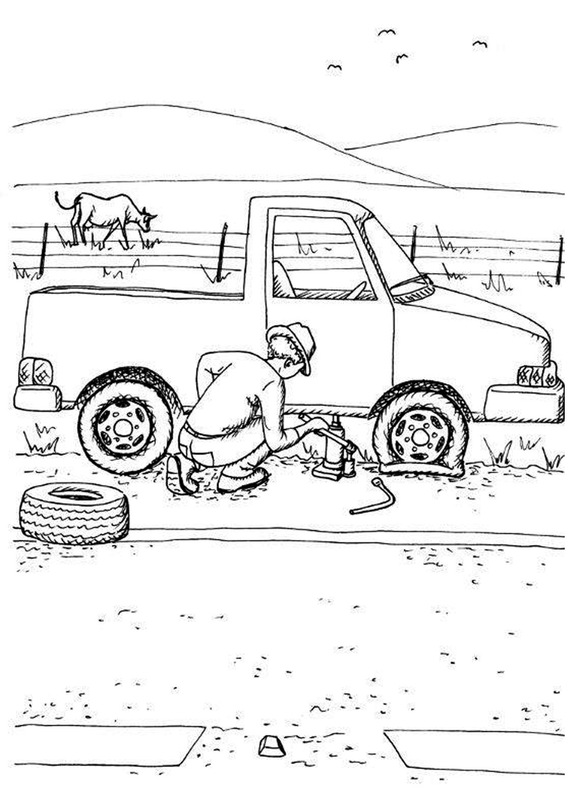
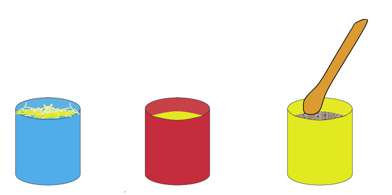
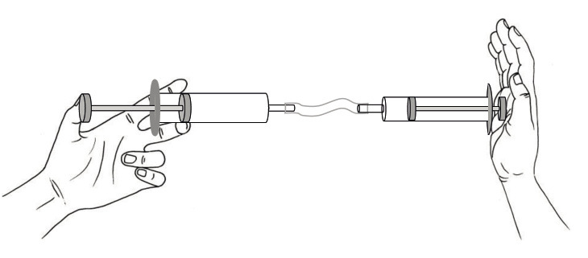
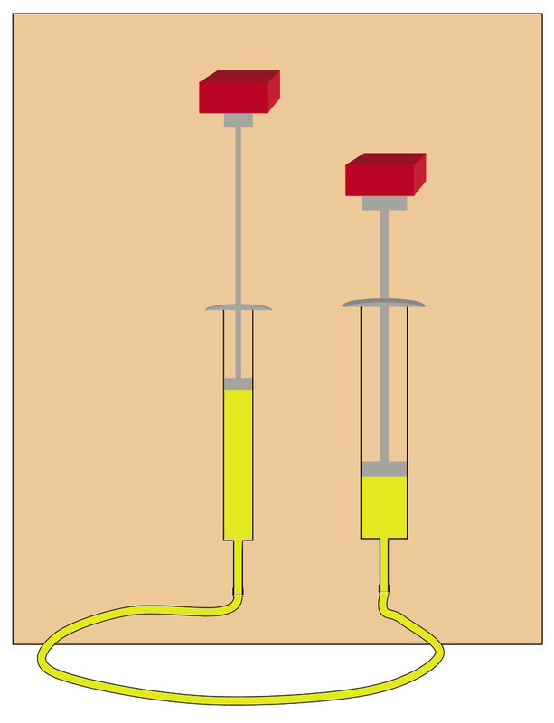

Hidroulika en pneumatika
Hierdie hoofstuk is hersiening van wat jy reeds weet oor hoe om voorwerpe met lug en water te beweeg. Jy gaan meer leer oor die verskille tussen pneumatiese en hidrouliese stelsels, en jy gaan leer hoe om hidrouliese stelsels te gebruik om met die toepassing van 'n klein krag 'n groot las te beweeg.

Die gebruik van water en lug om voorwerpe te beweeg
Saamdrukbare en onsaamdrukbare substansies
Die blou blikkie bevat opgefrommelde strooi, die rooi blikkie bevat water en die geel blikkie bevat sand.

-
Dink jy dit is moontlik om die sand met 'n houtlepel saamte druk sodat dit minder ruimte in die geel blikkie opneem? J/N
-
Dink jy dit is moontlik om die strooi saam te druk? J/N
-
Dink jy dit is moontlik om die water saam te druk? J/N
Strooi, gras en opgefrommelde papier is
"saamdrukbaar". Dit beteken dat dit saamgedruk
kan word om minder ruimte in te neem.
Sand is "onsaamdrukbaar".
Dit beteken dat dit nie
saamgedruk kan word om minder ruimte in te
neem nie.
-
-
Is water saamdrukbaar of onsaamdrukbaar?
-
Is lug saamdrukbaar of onsaamdrukbaar?
-
Hoe kan jy 'n spuit gebruik om die saamdrukbaarheid en onsaamdrukbaarheid van lug en water te ondersoek?
-
Lug is saamdrukbaar maar water is onsaamdrukbaar.
Twee spuite wat met 'n rubberbuis verbind is, kan 'n "spuitstelsel" genoem word.
As die rubberbuis en die spuite met lug gevul is, word dit 'n "pneumatiese stelsel" genoem. As die rubberbuis en die spuite met water of olie gevul is, word dit 'n"hidrouliese stelsel" genoem.

-
As die suier aan die linkerkant ingedruk word, druk die suier aan die regterkant teen die hand. Sal die drukking op die hand met 'n pneumatiese stelsel dieselfde wees as met 'n hidrouliese stelsel? Verduidelik jou antwoord.
'n Pneumatiese en hidrouliese stelsel word hieronder gewys. In elke geval is die twee spuite presies ewe groot. Twee swaar voorwerpe rus op die regterkantse suiers.

Figuur 6 -
Wat sal met die blou voorwerpe gebeur as die linkerkantse suier in beide stelsels met 2 cm ingestoot word? Verduidelik jou antwoord.
Dik en dun spuite

-
Die vrou met die groot vrag hoef net 'n klein afstand na haar huis toe te loop. Die vrou met die klein vrag moet nogal ver huis toe loop. Wie sal die moegste wees as sy by die huis aankom? Verduidelik jou antwoord.
Die prent hieronder wys 'n tweespuitstelsel met 'n dikker en 'n dunner spuit. Die stelsel is met water gevul totdat daar geen lugborrels meer was nie.
Aksienavorsing
Jy gaan nou meer aksienavorsing met twee spuite onderneem. Om dit te doen, moet jy 'n apparaat bou.
Kopieer hierdie liniale op 'n papiervel en heg hulle aan 'n stuk geriffelde karton, of 'n stuk karton van 'n graankosboks vas. Die lyne op die liniale is 2 mm van mekaar af.

Heg jou spuitstelsel, soos wat op die volgende bladsy gewys word, met kleefband aan die geriffelde karton of graankosboks vas.
As jy die suier aan die linkerkant indruk, sal die suier aan die regterkant uitbeweeg.
Die spuit waarvan jy die suier indruk, word die
meestersilinder of insetsilinder van die stelsel
genoem.
Die silinder wat uitbeweeg, word die slaafsilinder of
uitsetsilinder van die stelsel genoem.
Jy gaan nou navorsing doen om te sien hoe ver die uitsetsilinder uitbeweeg as die insetsilinder oor 'n spesifieke afstand ingedruk word.
-
Trek water in die insetsilinder op, totdat dit byna vol is en plaas die suier regoor 'n merk op die liniaal.
-
Maak 'n klein merkie by die bopunt van die suier van die uitsetsilinder.
-
Druk die insetsilinder se suier 1 cm in.
-
Meet hoe ver die uitsetsilinder uitbeweeg het.
-
Skryf jou afmeting op die tabel hieronder.
-
Herhaal stappe 1 tot 4, maar druk nou die insetsilinder 2 cm in.
-
Herhaal al die stappe van 1 tot 4 vir afstande van 3 cm en 4 cm.
|
Insetsilinderbeweging in cm |
1 |
2 |
3 |
4 |
|
Uitsetsilinderbeweging in cm |
-
Dink nou aan die scenario waar jy die dik spuit die meestersilinder en die dun spuit die slaafsilinder gemaak het. Hoe ver dink jy sal die suier van die dun spuit beweeg as jy die suier van die dik spuit 1 cm indruk?
-
Voorspel ook wat sal gebeur as jy die suier van die dik silinder 'n ½ cm,1 cm of 2 cm indruk. Skryf jou voorspellings in die tabel hieronder.
Dik meestersilinder se beweging in cm
½
1
2
Dun slaafsilinder se beweging in cm
-
As jy tyd het, doen meer navorsing om jou voorspelling na te gaan.
Dik meestersilinder se beweging in cm
½
1
2
Dun slaafsilinder se beweging in cm
Jy verrig werk wanneer jy die meestersilinder indruk. Die slaafsilinder verrig weer werk wanneer dit aan die ander kant beweeg. Die hoeveelhede werk aan die insetkant (meestersilinder) en aan die uitsetkant (slaafsilinder) moet dieselfde wees, want werk word nie sommer verniet verrig nie!
-
Wat merk jy op? Jy het nou ondersoek hoe die afstand van beweging verander as jy die werk wat op een silinder verrig word na 'n ander silinder met 'n ander dikte oordra. Is dit slegs die afstand waaroor beweeg word wat verander? Plaas 'n vinger op die suier van die slaafsilinder wanneer jy die suier van die meestersilinder indruk. Doen dit op twee verskillende maniere, deur eers die dun spuit as die meestersilinder te gebruik, en dan die dik spuit as die meestersilinder te gebruik.
Verandering van groottes van kragte deur 'n hidrouliese sisteem
Die prentjie wys 'n plastieksak wat met water gevul is. As jy jou linkerwysvinger liggies teen die sak sit en met jou regterwysvinger teen die sak druk, wat dink jy sal jy met jou linkerwysvinger voel?
As druk toegepas word op 'n buigbare houer gevul met vloeistof, word dieselfde druk orals in die houer gevoel. Die druk word deur die vloeistof "gelei" of "oorgedra". Let wel: "Druk" is nie dieselfde as "krag" nie, alhoewel dit daaraan verwant is. 'n Paar eeue gelede het 'n man met die naam Blaise Pascal dit besef en daaroor geskryf. Dit staan as"Pascal se beginsel" bekend.
Jy gaan nou 'n bietjie aksienavorsing doen om te ondersoek hoe druk deur water oorgedra word. Om dit te doen benodig jy dieselfde spuitstelsel op karton gemonteer wat jy gebruik het vir jou eksperimente in die vorige afdeling. Plaas dit hierdie keer regop en ondersteun dit met boeke of iets anders wat stewig is. Jy het ook klein voorwerpe nodig wat ewe veel weeg, byvoorbeeld klein boksies vol sand.
-
Trek water in die dik silinder op totdat dit byna vol is. Jy gaan dit as die insetsilinder gebruik.
-
Plaas een boksie op die suier van die uitsetsilinder. Plaas een boksie op die suier van die insetsilinder.
Beweeg die suier van die uitsetsilinder?
-
Plaas nog 'n boksie op die suier van die insetsilinder. As die suier van die uitsetsilinder nog nie opwaarts beweeg nie, plaas nog boksies op die insetsilinder.

Figuur 10 -
Dink oor wat jy nou net waargeneem het.Watter invloed het die boksies wat jy op die insetsilinder geplaas op die uitsetsilinder gehad?
Die boksies op die insetsilinder druk afwaarts op die suier in die stelsel. Hierdie druk word deur die water in die stelsel op die suier in die uitsetsilinder oorgedra en druk dit opwaarts.
In plaas daarvan om te sê "die boksies druk afwaarts" sê die tegnoloë gewoonlik dat "die boksies 'n afwaartse druk uitoefen".
-
Het die suier van die uitsetsilinder verder beweeg as die suier van die insetsilinder?
-
Was die krag, uitgeoefen deur die boksies wat jy op die insetsilinder geplaas het, gelyk aan die opwaartse krag wat op die enkele boksie op die suier van die uitsetsilinder uitgeoefen is?
-
Dink terug aan die twee vrouens op pad huis toe met hulle sakke in afdeling 5.2. Wat het hulle storie en hierdie eksperiment in gemeen? Dink goed na voordat jy jou antwoorde in die spasie hieronder neerskryf.
Wanneer werk van ân dik silinder na ân dun silinder oorgedra word, is die krag wat uitgeoefen word op die suier van die dun silinder, kleiner as die krag wat toegepas word op die suier van die dik silinder. Dit is waarom jy meer as een boksie op die dik silinder se suier moes plaas voordat dit een boksie op die dun silinder se suier opwaarts kon beweeg. Die druk in die vloeistof is orals dieselfde, op die insetsilinder se suier asook op die uitsetsilinder se suier. Maar omdat die insetsilinder dikker is, is die krag op die insetsilinder groter as die krag op die uitsetsilinder.
Volgende week
In die volgende hoofstuk sal jy leer hoe hidrouliese stelsels gebruik word om motors en ander swaar voorwerpe op te lig.